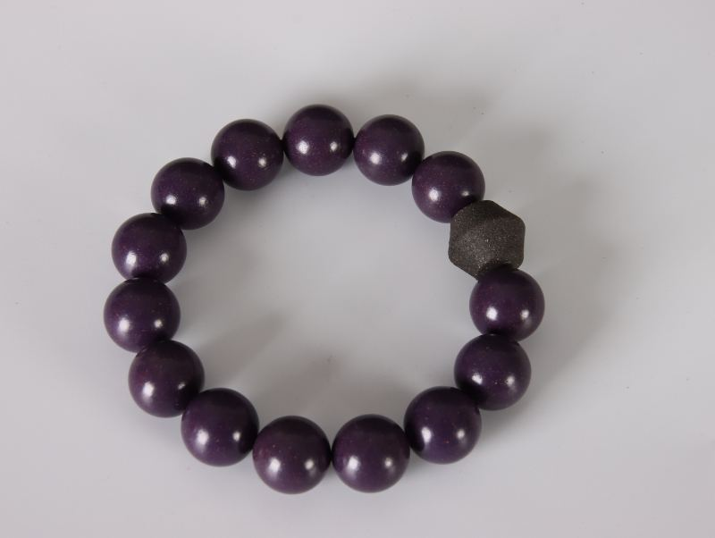
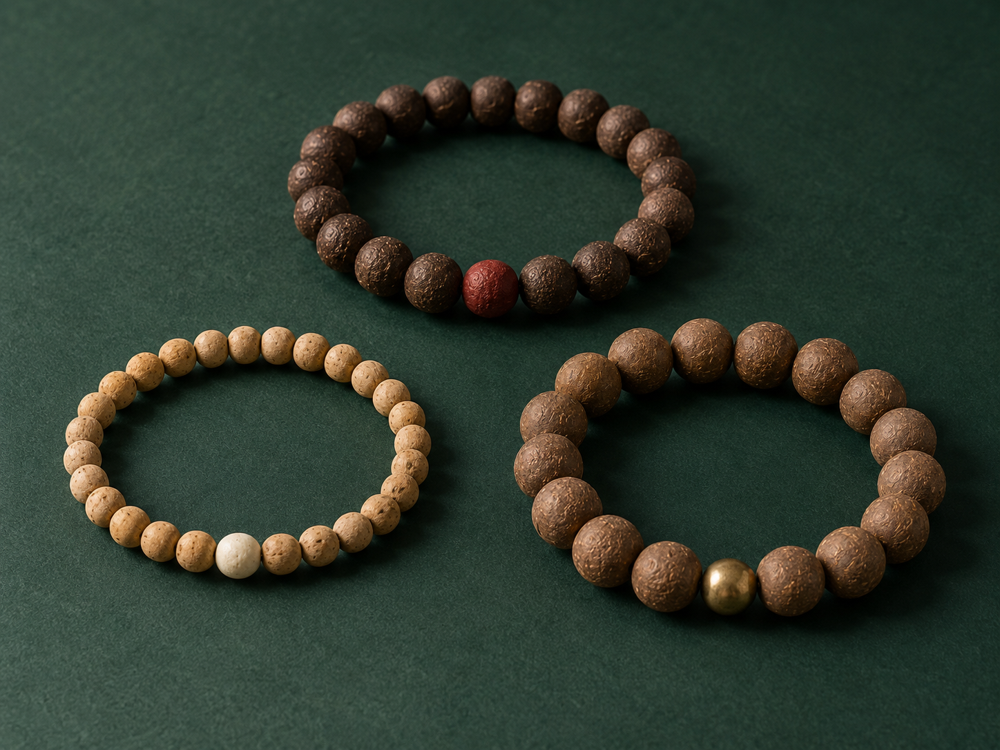

在手机 Chrome 菜单中选择“安装应用”或“添加到主屏幕”。苹果手机可用 Safari 的分享菜单添加。微信内请先用系统浏览器打开本站。添加后仍使用当前账号访问。
慢一点，
也很好。
把留白与喜欢的香，戴进日常。
从此刻的心情开始
实拍暂未加载点此查看原款原款实拍 / 颜色参考紫气东来 1.5 手串
今天，想给自己什么？
只记录你的偏好，实际香气与用料由店主确认。
下一步，挑喜欢的实拍款颜色看实拍，香气聊偏好。相册中有茉莉、玫瑰等款名；完整香方、可制作颜色与库存仍需店主确认。
更多来源款
32款主图已随站点保存。更多款沿用相册图片，未逐一核验库存、香方或功能。来源款名与店主描述仅用于检索，不作为产品效果说明。
调整这件的需求
心情已从上方选择带入，也可以在这里补充想法。
香气偏好
按需求与偏好整理候选。气味名称有来源，功能适配、香方、库存与报价仍需店主确认。
这里提供气味与佩戴搭配建议。持续失眠、焦虑或身体不适需要专业帮助，合香珠不替代诊疗。
留白
收一点色彩，留一点呼吸的空间。
说出需求后，查看有依据的候选；珠圈是外观设计意向。
示例香材方向：檀香、雪松。具体成分和比例待香方确认。
贴皮肤量一圈，不用先加松量。
尺寸按圆珠单圈近似估算，原款为双圈或异形珠时需另核。这三组珠序配色仅为示意，不是全部可选颜色；实物颜色以相册与店主确认为准，实拍照片未改色。
当前预览尚未加入方案。
我的方案
还没有选款每件保留自己的需求、尺寸与数量。
先选款，再调整需求；已填写的内容会保留。
选款或数量已经变化，你编辑的文字仍保留。请更新方案，或明确使用当前文字。
价格与币种待店主确认；这份方案尚未下单。
更多搭配灵感与单件导出
换个风格，也可以
配香和尺寸可以分别调整
把搭配交给店主，
一起确认你的实物。
原款名称、来源链接、气味偏好和尺寸意向会写进文字沟通单。店主确认香方、配件、可制作性和报价后再成交。
搭配单用于制作前沟通，报价由店主确认。
将方案发给香友
多选款式并生成购买清单后，复制方案，交给香友沟通确认。
请自行粘贴发送，尚未发送或下单。
Facebook 沟通入口待本人确认真实账号或主页链接；确认前可继续使用微信。方案须自行粘贴发送，尚未下单或付款。
照片来自现有资料，当前库存、香方和报价需确认。
AI 辅助生成·图片为效果示意